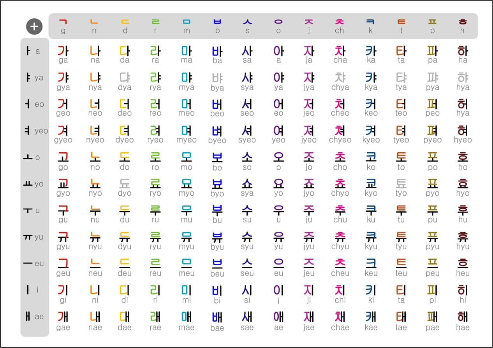

We, on this page talk about languages, ancient, modern and everything in between!
The most ancient languages in the world are Sumerian, Akkadian and Egyptian, while the oldest surviving language in the world is Tamil, spoken in the southern part of Bharata and in some parts of Sri Lanka. The Tamil language has a rich culture history tracing its history back several centuries. The language has been derived from some proto-Dravidian language which was spoken in the language before the formation of Tamil. Now since we are already talking about ancient languages we will also be talking about some more ancient languages and discussing some facts about them.
Tamil is considered to be the oldest surviving language. It is currently spoken in the southern part of Bharata and some parts of Sri Lanka. The language has been derived from some proto-dravidian language.
So, in Tamil we would say Vanakkam for hello.
Tamil ScriptIndus Valley is believed to be one of the oldest civilisations. It was certainly a one of a kind of civilization. It had an area larger than all of its preceding civilzations combined(i.e. Egyption civilization and Mesopotamian civilization). Just like the civilization its language too is baffling and has continuously baffled historical linguists for decades. The script is yet to be deciphered and as of now still remains a mystery to modern historians. Since its discovery, even most of the civilization remains a mystery due to its script being undeciphered. Some scientists speculate that the language might be some proto-Dravidian language related
Indus Valley ScriptHangul is made up of of 24 basic letters, 14 of which are consonants (ㄱ ㄴ ㄷ ㄹ ㅁ ㅂ ㅅ ㅇ ㅈ ㅊ ㅋ ㅌ ㅍ ㅎ) and 10 of which are vowels (ㅏ ㅑ ㅓ ㅕ ㅗ ㅛ ㅜ ㅠ ㅡ ㅣ). Additionally, the Korean alphabet has 19 complex letters with 5 tense consonants (ㄲ ㄸ ㅃ ㅉ ㅆ) and 11 complex vowels (ㅢ ㅚ ㅐ ㅟ ㅔ ㅒ ㅖ ㅘ ㅝ ㅙ ㅞ). These complex Korean vowels are formed by combining the basic vowels mentioned above.
It is believed that the Korean alphabet, or the Hangul, was invented by a Korean king named Sejong (born 1397—died 1450). He was a monarch of the Chosŏn (Yi) dynasty during whose reign (1419–50) cultural achievements in Korea reached their highest point. Sejong is best known for his development of Hangul (Han'gŭl), the phonetic system for writing the Korean language that is still in use.
The following is the Korean alphabet developed by the Korean king Sejong-

Spanish originated in the Iberian Peninsula and developed out of spoken Latin, also known as Vulgar Latin. Castilian Spanish was established as the dominant Spanish dialect at the height of the Reconquista, the reconquest of Spain from Muslim rule, and spread around the world thereafter.
The Spanish alphabet include the following characters
| Capital characters | Lower case characters |
|---|---|
| A | a (á) |
| B | b |
| C | c |
| D | d |
| E | e (é) |
| F | f |
| G | g |
| H | h |
| I | i (í) |
| J | j |
| K | k |
| L | l |
| M | m |
| N | n |
| Ñ | ñ |
| O | o (ó) |
| P | p |
| Q | q |
| R | r |
| S | s |
| T | t |
| U | u (ú, ü) |
| V | v |
| W | w |
| X | x |
| Y | y |
| Z | z |
* CH, Ch ch
* RR,Rr rr
* LL, Ll ll
Chinese (simplified Chinese: 汉语; traditional Chinese: 漢語; pinyin: Hànyǔ; lit. 'Han language' or 中文; Zhōngwén; 'Chinese writing') is a group of languages spoken natively by the ethnic Han Chinese majority and many minority ethnic groups in China. Approximately 1.35 billion people, or around 16% of the global population, speak a variety of Chinese as their first language.
Chinese languages form the Sinitic branch of the Sino-Tibetan language family. The spoken varieties of Chinese are usually considered by native speakers to be dialects of a single language. However, their lack of mutual intelligibility means they are sometimes considered to be separate languages in a family. Investigation of the historical relationships among the varieties of Chinese is ongoing. Currently, most classifications posit 7 to 13 main regional groups based on phonetic developments from Middle Chinese, of which the most spoken by far is Mandarin with 66%, or around 800 million speakers, followed by Min (75 million, e.g. Southern Min), Wu (74 million, e.g. Shanghainese), and Yue (68 million, e.g. Cantonese). These branches are unintelligible to each other, and many of their subgroups are unintelligible with the other varieties within the same branch (e.g. Southern Min). There are, however, transitional areas where varieties from different branches share enough features for some limited intelligibility, including New Xiang with Southwestern Mandarin, Xuanzhou Wu Chinese with Lower Yangtze Mandarin, Jin with Central Plains Mandarin and certain divergent dialects of Hakka with Gan (though these are unintelligible with mainstream Hakka). All varieties of Chinese are tonal to at least some degree, and are largely analytic.
The earliest Chinese written records are oracle bone inscriptions dating from the Shang dynasty c. 1250 BCE. The phonetic categories of Old Chinese can be reconstructed from the rhymes of ancient poetry. During the Northern and Southern period, Middle Chinese went through several sound changes and split into several varieties following prolonged geographic and political separation. The Qieyun, a rime dictionary, recorded a compromise between the pronunciations of different regions. The royal courts of the Ming and early Qing dynasties operated using a koiné language known as Guanhua, based on the Nanjing dialect of Mandarin.
Punjabi (/pʌnˈdʒɑːbi/ pun-JAH-bee; Shahmukhi: پنجابی; Gurmukhi: ਪੰਜਾਬੀ, Punjabi: [pəɲˈdʒab̆.bi] ), sometimes spelled Panjabi, is an Indo-Aryan language native to the Punjab region of Pakistan and India. It is one of the most widely spoken native languages in the world with approximately 113 million native speakers.
Punjabi is the most widely-spoken first language in Pakistan, with 80.5 million native speakers according to the 2017 census, and the 11th most widely-spoken in India, with 31.1 million native speakers, according to the 2011 census. It is spoken among a significant overseas diaspora, particularly in Canada, the United Kingdom, the United States, Australia, and the Gulf states.
In Pakistan, Punjabi is written using the Shahmukhi alphabet, based on the Perso-Arabic script; in India, it is written using the Gurmukhi alphabet, based on the Indic scripts. Punjabi is unusual among the Indo-Aryan languages and the broader Indo-European language family in its usage of lexical tone.
Hindi is the official and the most spoken language of Bharata(India). It is also the most